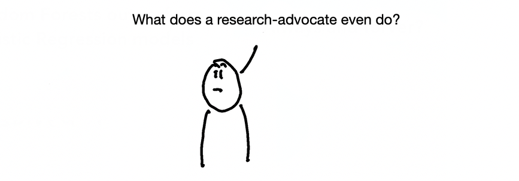
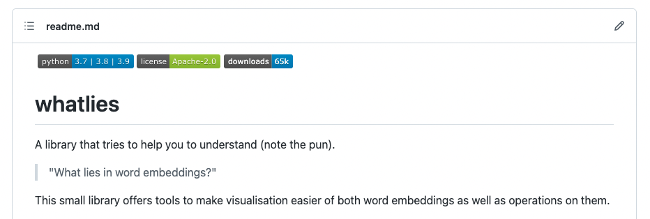
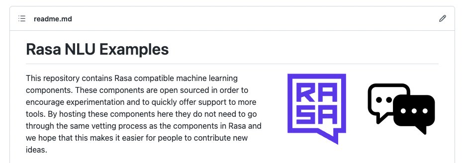
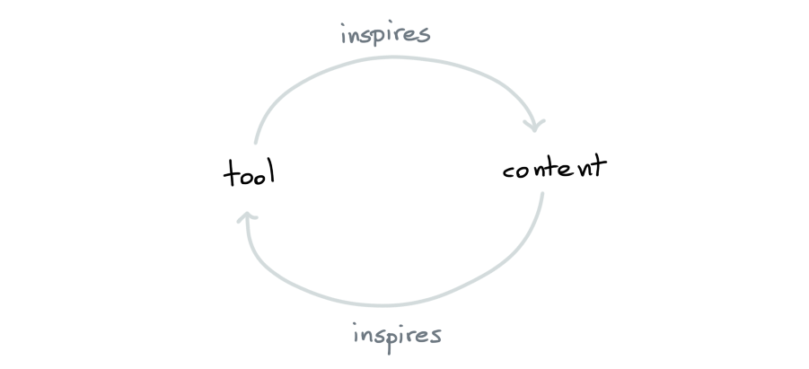
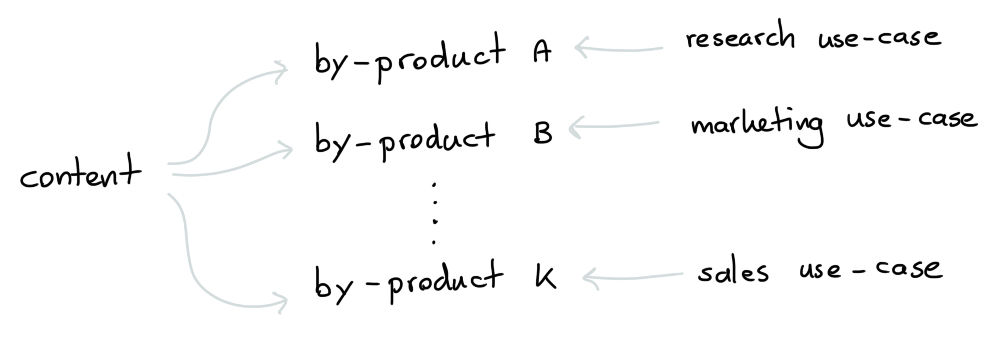
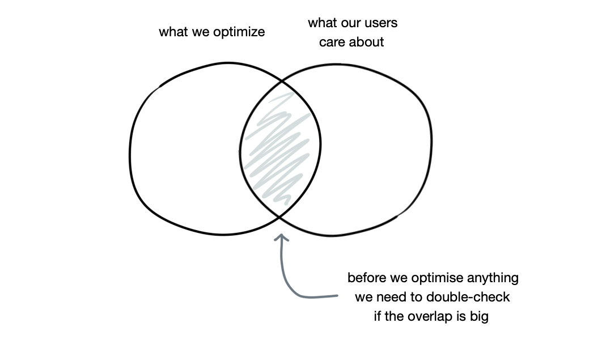
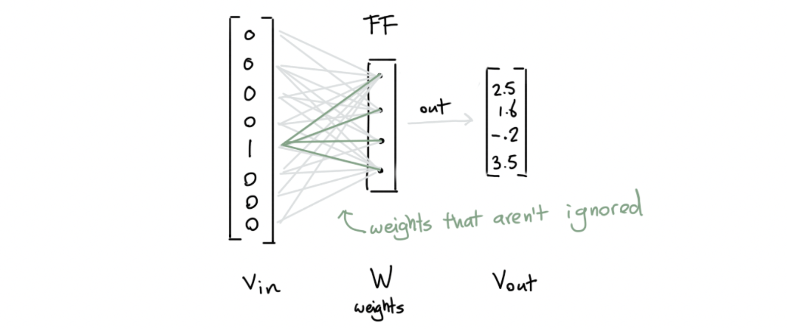
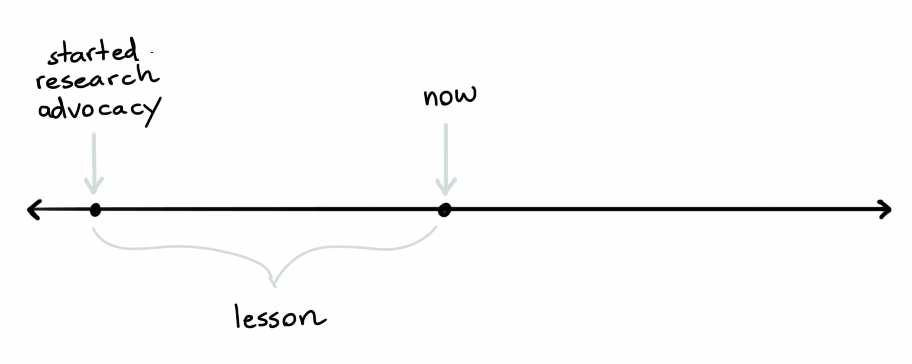
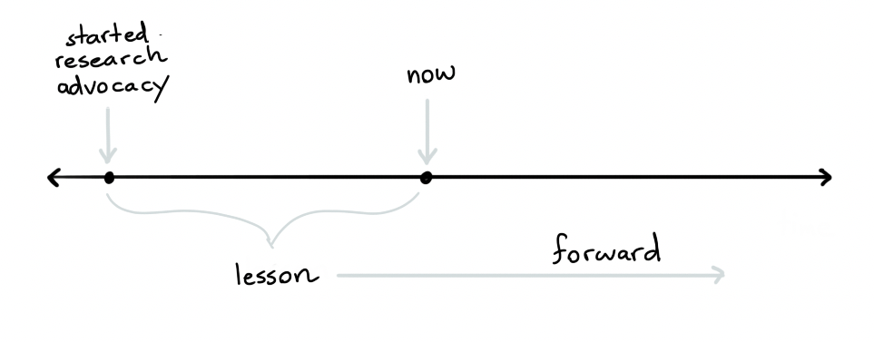
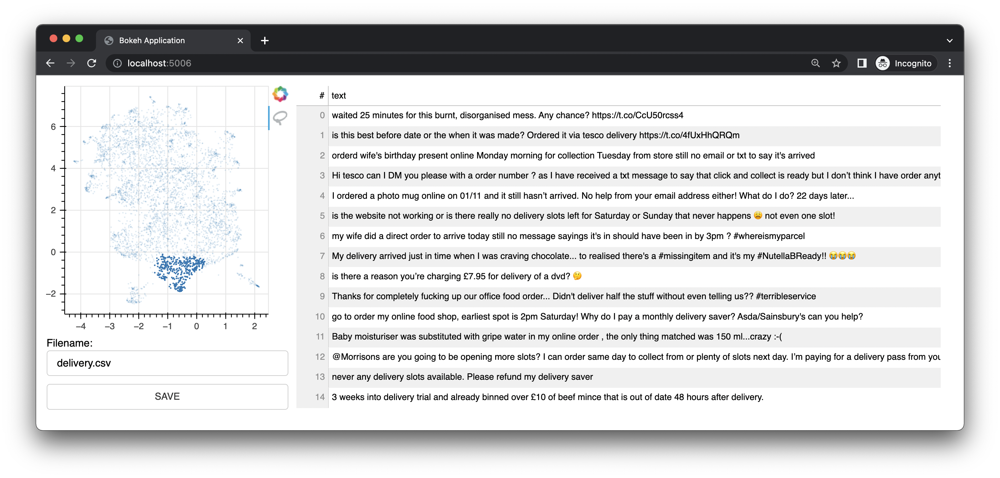

In my previous role I worked at Rasa as a “Research Advocate”. I don’t know of anybody else with the same job title and it was certainly an unconventional job.
So many people keep asking me the same question:
 In this blogpost I’d like to shed some light on that, while also giving some advice to anyone who wants to be in the world of developer advocacy.
Before going there though, I need to acknowledge that during my final week at Rasa a very large layoff got announced. It came out of the blue and while it did not affect me (I was changing companies already) it did affect a lot of my former colleagues. The situation is beyond awkward for both those who were let go as well as those who stayed behind. Rasa treated me very well during my time there, but the layoff should’ve been handled better.
With that said, let’s talk about research advocacy.
How it started
Rasa is a company that makes software that allows you to build virtual assistants. Just like elasticsearch makes software to run your own search engine, Rasa allows you to create your own chatbot.
Unlike elasticsearch, a significant chunk of the Rasa stack revolves around a machine learning pipeline that needs to be customized. If a user misinterprets an aspect of machine learning, or misconfigures the pipeline, the chatbot will perform poorly.
Extra details.
The fact that there’s a lot of hype in the field wasn’t helping but it also doesn’t help that Rasa’s algorithmic stack is relatively complex. Just before I joined, Rasa was just about to release their DIET algorithm for intent classification and entity extraction. They also had another algorithm, called TED, which could predict the following action in the conversation by using the entire conversation so far.
Both algorithms had clever ideas in them, achieved good results and even had papers written about them. They used the transformer architecture under the hood as well as a trick from the starspace paper. The design for both algorithms was very sensible, but it was a lot to take in.
This posed a challenge for the company. If users don’t appreciate the design choices in these ML algorithms, they may accidentally misinterpret a feature and end up with a poorly performing assistant. The research team wrote papers about their research, but that’s not sufficient for the general audience. There was a consensus in the company that Rasa needed to invest into educational material such these algorithms were better understood. They were building a developer relations team, and they wanted somebody to focus into their algorithms.
Around the same time, their CTO discovered my drawdata experiment, read one of my blog posts and reached out. Coincidentally, when he reached out, I was in Berlin. So I dropped by their office to have a Club Matte to exchange ideas. I remember having an enjoyable conversation about the dangers of hype in machine learning before heading back to the conference I attended.
There’s a funny side-note to that moment: I was completely unaware that there was even an intent to try to hire me. I recall that the CTO was interested in “collaborating,” but it took me well over a month before I realized that he wasn’t talking about a blog post.
The Job
Eventually, I accepted the job offer. But it was clear the role itself was an experiment from the beginning. There was a hole to be filled, but it wasn’t clear “how.”
Rasa made a job description, but it was so experimental that the CTO wasn’t even sure what job title to give it. We all knew I had to do “something between devrel and research,” which is why they decided on “Research Advocate,” but nobody really knew what that meant. The job description was clear on what kind of person might fit the role, but the actual activities were a bit vague.
This was normal because they invented a new role but it also meant that part of being the research advocate was to figure out what a research advocate does.
A snippet of the job description for the role.
Research Advocate
We don’t draw a hard line between our research and engineering teams, we all work on the same stack and share work, knowledge, and tools. Communicating well about the latest research in our field (both our own work and others’) is extremely valuable for our community. NLP is a fast-moving field, and we are looking for a Research Advocate to help our community understand “what does this new result mean for me?”.
As a Research Advocate you will report to the head of developer relations, and will work closely with our Developer Relations and Research teams on Rasa’s developer education efforts, focused on research. You will build prototypes, demos, give talks, write blog posts, and create any other content you believe will best serve our worldwide developer community.
ABOUT YOU
You have a technical background, you love digging into the new research topics, replicating and testing results, and building new things from scratch. Above all, you take pride in helping others to understand difficult concepts and build great things. You are excited about exploring different research areas and communicating the results to wide and diverse developer audiences.
Required skills:
- Advanced knowledge in Python
- Industry experience in applying machine learning algorithms on various problems
- Experience in public speaking and/or technical writing
- Strong communication skills and ability to explain complex ideas, algorithms, and technologies to diverse audiences
- You are comfortable with mathematics behind machine learning
THINGS YOU WILL DO
We’re a startup, so you’ll have to be comfortable rolling up your sleeves and doing whatever is required to support our mission. However, you can definitely expect to:
- Creating technical education content explaining different research topics spanning across the field of conversational AI
- Replicate and test models described in different research papers
- Tinker around and build new projects using the bleeding edge models and technologies
- Work closely with the research and developer relations teams to help us shape the direction of developer education at Rasa
PERSONAL PROJECTS
The ideal candidate for this role will very likely have an established online presence in the data science / machine learning / developer community and will likely want to continue to work on hobby/personal projects. That’s great and we encourage that. For any projects in collaboration with a 3rd party, we would discuss beforehand and agree that there is no conflict of interest.
The Work
I figured as a first step, I should work on educational content. Rasa had some new algorithms in their stack and developers needed to appreciate how they worked. This led me to work on the Algorithm Whiteboard playlist on Youtube. The goal was to eventually release a video per week, but to start making educational content to get users familiar with NLP in chatbotland.
The content would be planned ahead, reviewed and scheduled but my schedule left about a day per week for me to run benchmarks and experiments.
I quickly found a good use for this time. While working on the content for word embeddings I noticed that I needed a tool that would help me visualize how different embeddings behave. This tool was missing, but I really had a use-case for it in my series.
This led me to create a helper library called whatlies. It would help you figured out what lies in word embeddings, hence the name.

The tool turned out to be very convenient and it made very regular appearances in the Youtube channel. But the library was a two-way street. When the community started asking questions about subword embeddings, it was very easy to add support for them. With support added, it was very easy to make content.
As the whatlies library started adding support for more and more types of embeddings it also started supporting more and more types of language models. I wanted a quick way to test these tools for classification use-cases so I made these embeddings scikit-learn compatible. The library was already setup in a component structure, so this implementation was super easy to make. The library also had some contributions from outside.
The scikit-learn API for whatlies.
import numpy as np
from whatlies.language import SpacyLanguage
from sklearn.pipeline import Pipeline
from sklearn.linear_model import LogisticRegression
pipe = Pipeline([
("embed", SpacyLanguage("en_core_web_md")),
("model", LogisticRegression())
])
X = [
"i really like this post",
"thanks for that comment",
"i enjoy this friendly forum",
"this is a bad post",
"i dislike this article",
"this is not well written"
]
y = np.array([1, 1, 1, 0, 0, 0])
# This pipeline now uses embeddings from spaCy
pipe.fit(X, y)This scikit-learn feature made the library much more popular. But it also led me to wonder how hard it could be to add support for these embeddings in Rasa. The goal of Rasa is to be language independant, and by offering these embeddings we could get feedback from the non-English community. This is great because by making it easier for our community to try out the embeddings, we won’t need to ask for datasets to run the benchmarks ourselves.
The research team was eager to give the community more experimental tools, but they were also a bit worried about adding many embeddings to the Rasa library as core components. By adding it to our main library, we wouldn’t just need to support them long term, we would also need to be able to advise our users on when to use them. But since we don’t speak the 275 languages that some of our embeddings support, it felt better to host it as a plugin instead. That way, our community wouldn’t need to implement all the tools, but they could report back and let us know what worked. This is how the rasa-nlu-examples repository got started.
 There was now a library for my experimental Rasa plugins. That meant that whenever I came up with a new trick to try I’d have a place to share the code. This led to a bunch of extra tokenisers, entity extractors and intent classifiers. The research team was excited by this project because they suddenly had a central place where experimental tools could be shared with the community. By sharing these items as a plugin it was clear that the tools were experimental but because it was only a pip install away we were still able to get a lot of feedback. If the feedback was good, we could consider adding it to the core library.
The loop
Eventually I started understanding that there was a pattern to what I was doing.
- Sometimes I noticed the need for a tool as I was working on content.
- Sometimes I was working on a tool, which could immediately be turned into content!

It also started occuring to me that I didn’t need to play by the same rules as some of my colleagues. Since my primary focus was education it didn’t matter what I was working on, so as long as I could produce relevant content on a regular basis.
This led me to work on even more videos, plugins, tools and Rasa features. Here’s a selection.
- I made taipo, a data augmentation/quality tool for Rasa that supports typo generation, transliteration and bad label detection. Each topic was explained in more detail on the algorithm whiteboard.
- I added a rasa-action-examples repository to highlight how custom Python code could be used from a chatbot. It lists a demo that can generate buttons as a fallback during a conversation or resort to a search engine on behalf of the user.
- I made rasalit which is a collection of streamlit apps that help users understand their Rasa models better. This tool made an appearance whenever I was running a grid-search for a Rasa model.
- I added spaCy 3.0 support to Rasa. This added support for more languages but also made it easier for folks to re-use their trained spaCy models in a chatbot as well.
- I improved the
rasa --versioncommand by giving it more elaborate output that’s relevant for debugging. This made it much easier for us to understand Github issues. - I also made a popular bulk labelling demo which combines a trick from my human-learn together with whatlies that allows you to assign a name to clusters of text. The demo comes with a user-interface and led to a lot of happy users. It turned out to be a very useful tool when you’re just getting started with a virtual assistant and you’re interested in finding intents to get started with.
- I also wrote pytest-duration-insights. This was a personal project, but it was inspired by some of the efforts at Rasa to reduce the unit-test times. I later learned that it was used at a bunch of places, including the scipy project.
Why so productive?
All of this code made a fair amount of impact. But I think the reason why I’ve been able to work on this code in the first place is related to the “we don’t know what it means to be a research advocate”-aspect of my role. Because my role mainly required me to make content, nobody complained if I was doing something experimental in order to make content. As long as the content was relevant, it’d be time well spent!
That also meant, and this is crucial, that I never had to ask permission from anyone to work on a tool. I would later hear stories from former colleagues that they were slightly jealous of me in this regard. Most researchers or engineers in the company would need to attend meetings and defend features before they could be implemented. But since all of my tools were a by-product from the content, I was free to keep building plugins. Just as long as the steady stream of content kept coming.
It’s not like I never had meetings, but I want to make an observation out of this because it might serve as great advice for people who want to enter developer advocacy land. It’s likely that your job will revolve around making interesting content, but that typically gives you more freedom to get creative with the stack. Use that freedom!
I should also admit that Rasa was the first time I was doing both developer relations and NLP. I was familiar enough with machine learning to be able to make progress on my own. But I was unfamiliar enough with NLP that I didn’t really know what I was doing. This combination allowed me to easily just “try out a bunch of things”. If the approach failed, I could still make relevant content, given that I could explain why it failed. Clearly describing failure scenarios is a great theme for the field that we’re in.
Process

As the company started growing, I learned that my by-products got re-used within the company at a bunch of unexpected places.
- The research team started using the algorithm whiteboard as part of their on-boarding procedure. If the videos helped our community members understand our algorithms, they could also help new employees understand the internals quicker.
- The whatlies library was submitted and accepted as a paper (thanks to the collaboration with Rachael and Thomas) at the NLP Open Source Software workshop at ACL 2020.
- Some of my bulk labelling tools were used by some of my colleagues in the “community success”-team to help clients kickstart their assistants. Turns out: these experiments really work!
- Some of the videos started getting very popular. It seems that my way of explaining attention mechanisms literally caught the attention of folks. So much so that our recruiter told me it’s how some of our applicants learned about Rasa.
- Some of my algorithm whiteboard videos could be moved into smaller playlists. There was a small sequence on transformers and another on bias in word embeddings. This turned out to be beneficial when we were building our own learning center. By having these smaller video series ready, we were able to re-package them as courses on the landing page. That meant that the learning center was able to launch with multiple courses right away.
- The embeddings in the
rasa-nlu-exampleslibrary didn’t just get used by our community, it also got the attention from some of our prospects. Turns out, a lot of companies have non-English customers and they need more than “just” English pipelines. Having a plugin around makes it easier to try out some components certainly helps getting started.
Again, my primary task at Rasa was related to education, but it was also the reason why many of these secondary benefits were possible.
It prompts an interesting question: what if my primary target was determined solely by quarterly plans? If my role wasn’t so experimental and unconventional, would I still have been bale to make such an impact “by accident?”
Privilege
I should immediately admit that I’ve been quite privileged both the assigned role as well as the group of folks around me. Without them it’s very unlikely that I would’ve made the same impact. For starters; I had an entire research team at my disposal who were more than happy to review my work or to refer any relevant papers or blog posts if need be. Each researcher would work on a specific part of the Rasa pipeline and would also have a different way of looking at a problem, which certainly worked as a source of inspiration. The semantic map embeddings from Johannes remains one of my favorite experiments of all time.
Then there’s the developer advocacy team. My boss Juste had been doing developer advocacy well before I was even aware that it was a job title. Because of this, she really had a keen eye for what would, and what wouldn’t work as great content. My direct colleague Dr. Rachael Tatman has a Phd in linguistics and was leading developer relations at Kaggle before joining Rasa. In my time at Rasa I contributed a good playlist, but the reason we reached over a million views and 20,000 subscribers was because of the careful planning and content creation that she had been working on. I learned a ton from her, both on the devrel front and the NLP front! We also had a dedicated community manager in the team, Emma, who helped us a great deal by organising events as well as our contributor program.
Managing a community is lot of work, but because we each had our focus we were a very productive team.
Other things I’ve learned at Rasa
- I learned to draw my favorite venn diagram in data science.

- Developer advocacy is much bigger than I anticipated. There are conferences for it and as well as specific analytics tools for the field.
- Rasa made a conscious decision to keep the developer relations team and the marketing team separate. Both teams had members who were tasked to make content, and the teams certainly collaborated at times, but it was set up so that both teams could focus on different audiences. Looking back, this seems like a strategically valid choice. You end up with a specialization in both teams that seems very beneficial.
- While much of my content involved algorithms, the solutions to many of the problems were usually more related to data quality. You need more than pretrained language models to make meaningful predictions.
- There’s a rediculous amount of hype in ML. There’s still a lot of folks saying that
king - man + woman = queeneven though there’s ample evidence that many embeddings don’t show this behavior at all.

- Rasa had a great Slack culture. People took the effort of thinking before writing, messages had proper spelling and people genuinely tried to keep the threads on topic. In a remote work environment it really makes a big difference.
- The WACOM tablet was the best investment in communication I’ve ever made. It was of great help in my videos, but it was also amazing when answering questions on the Rasa forum.

- Remote work can totally work, but it helps if the work is easily distributable. Doing content work fits perfectly in this because the only bottleneck is the review. But larger changes to the code base need a lot of syncing, which is hard when the workforce is distributed across timezones.
- Language is more than a bag of words.
- Doing support work is great. It makes you understand the pain points in your software and it’s a great source of inspiration for content. More people should do it.
- Nine times out of ten, the solution to a chat bot problem appears naturally when you just label some data yourself.
- Training universally useful pre-trained language models is friggin’ hard while training a model for a small but well understood use-case is usually much easier.

- Many people like to complain about bad chatbots, but there are some true gems out there. The coolest story I know of involves a large company with an HR department that people didn’t like interacting with. The solution? The HR team would try to automate one HR task a month via the company Slack. The thing that worked very well is that the distance between the chatbot designer and the chatbot user is short, so the feedback was direct. And after a few months, you can imagine the time that was saved internally.
- Many NLP tricks that work for English will totally fail in other languages.
- Like is often the case, a linear model works very well! After running some benchmarks, I felt compelled to leave with an on-brand final PR that implements LogisticRegression for the Rasa stack.
Looking Back

I don’t really know what it might mean to be a research advocate elsewhere, but at Rasa I’ve seen how the role caused meaningful contributions just by being defined in such an unconventional way. My gut says many other companies might benefit from doing something similar, but it helps to acknowledge that I was in a pretty lucky situation at Rasa.
Looking Forward

After two years of this work, part of me was ready for a change of scenery. My interests started moving beyond chatbots and I wanted to put more focus on engineering, ML user-interfaces, and bulk labelling tricks in general machine learning applications.
That’s why March 1st I’ve joined Explosion as a Machine Learning Engineer.
And guess what I’m doing there? I’ve been making some content and it just so happens like there’s a few by-products! There’s spacy-reports, cluestar, embetter and you can even run install bulk now.

This gives you a proper, but lightweight, bulk labelling interface locally. I’m super excited to work on this! There’s even a full tutorial for it on the Explosion Youtube that shows you how you can use it together with Prodigy.
So it looks like I might be able to work in a similar fashion, but for the spaCy, thinc and Prodigy projects. I’ll still be making content now and again, but a large part of my job will also be spent working on consultancy via their tailored pipelines offering. Check it out if you haven’t already!
Appendix: Whatlies
The whatlies project has moved to my personal account so that I can keep maintaining it. Odds are that I’ll keep whatlies around for the visualisation tools but that I’ll port the embeddings to a new library called embetter.